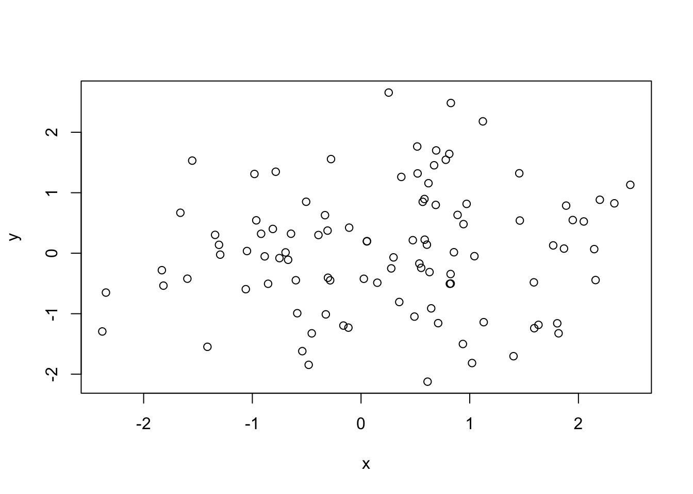

My goal here is to get you up and running with LaTeX and knitr. Because up and running is my goal, there are many topics related to LaTeX and knitr (especially LaTeX) that I do not cover here—for instance: tables and figures. However, I think this guide should get you pretty well along your track. If you run into issues, try the resources I’ve provided, try Google, and don’t be afraid to ask questions. Also, let me know if you think there is something that definitely should be added to these notes.
The very first thing you need to do is download a LaTeX distribution for your operating system:
Note: There are several solid online services available, but please install a LaTeX distribution on your machine.
Another note: You might be tempted by the simplicity of the LyX world. Try to resist the temptation. LyX is a nice program, but you will inevitably want more customization than it offers, and then you will regret you didn’t spend some time learning LaTeX. Give yourself some credit and go big.
knitrNext, head back over to RStudio and install the knitr package.1
knitr in RStudioNow we will tell RStudio to use knitr to build PDF documents. Open the settings in RStudio (Menu bar » Tools » Global Options2). Go to the “Sweave” tab.
First things first: how do you pronounce LaTeX? According to the LaTeX project website and to the founders of LaTeX, there are two “preferred” pronunciations: «lah-tech» or «lay-tech».
I’m going to walk you through a few LaTeX examples, but there is a lot more out there. Besides your normal resources (Google + StackExchange/Overflow), here are a few handy resources:
LaTeX is essentially two things:
It is particularly good for creating large documents with tables and figures—three things with which other word processors often struggle.
To create a PDF from your .tex document, you need to open the .tex file in a program that can compile. When you installed LaTeX, it probably installed a program to edit and compile (e.g., Gummi, TeXShop, Texmaker, TeXstudio, or TeXworks).3 Or… use RStudio!
Assuming you have properly installed LaTeX and an editor/compiler (again, you can use RStudio), you can now create your first LaTeX document.
A LaTeX document needs at least the following three lines of text:
\documentclass{article}
\begin{document}
\end{document}However, these three lines of text will produce an empty document, so don’t try to compile just yet.
The first line (\documentclass{article}) tells LaTeX which type of document you want to create (similar to selecting templates in Word). For class, papers, and publications, you will generally use article. Other options include report, book, letter, and beamer. The beamer option creates the slides you often see in seminars. There are many other options you can change by including them in square brackets before the curly brackets, i.e.
\documentclass[option1, option2, ...]{article}Among these options are the language and the default font size (the default is 10pt).
\documentclass[english, 12pt]{article}Everything between the \documentclass declaration and the beginning of the document (\begin{document}) is known as the preamble—it is where you load packages, change options/settings, etc. You write your text (paragraphs, equations, figures, tables) in between the calls of \begin{document} and \end{document} (in the document).
Let’s use a package called inputenc. We need to load the package, similar to the way we load a package in R. It’s pretty standard to use \usepackage[utf8]{inputenc} for the document’s encoding, so we will insert this line of code into our preamble.
\documentclass{article}
\usepackage[utf8]{inputenc}
\begin{document}
\end{document}Finally, we should probably have some text in our document.
\documentclass{article}
\usepackage[utf8]{inputenc}
\begin{document}
What a beautiful PDF.
\end{document}Now, let’s finally compile the document.
You should now have a stunning PDF.
You will probably want a little more out of LaTeX than we have done so far.
While writing, within the document you have access to a bunch of options for text.
\textbf{blah} will print the word “blah” as bold text.\textit{bleh} will print the word “bleh” as italic text.6\underline{blih} will print the word “blih” underlined.``) at the start and double quotations marks at the end of the quote (''). Example: ``This is a quote.'' It is a little annoying—especially when you copy and paste from another source—but if you don’t do it, your qutoation marks will be backwards half of the time.\par will also start a new paragraph.\\ will start a new line but not a new paragraph (no indentation).\\ or without \par, LaTeX will ignore the new line and keep the text going where the last line ended.\noindent command at the beginning of the paragraph. You can tell LaTeX to never indent paragraphs by placing the command \setlength\parindent{0pt} into the preamble.To change the line spacing (the default is single spacing), you can use the setspace package and its functions \singlespacing, \onehalfspacing, or \doublespacing, e.g. add the following lines to your preamble:
\usepackage{setspace}
\onehalfspacingTo create headings, use the built-it commands:
\section{}, \subsection{}, \subsubsection{}, \paragraph{}, \subparagraph{}*) before the first curly bracket to preven LaTeX from numbering the section, e.g. \section{Introduction} will have a number, while section*{Introduction} will not have a number.LaTeX provides a pretty straightforward way to make lists—numbered or unnumbered. For numbered lists, the command is enumerate. You combine it with \begin{enumerate} and \end{enumerate}, and in between, you use \item to create the individual text entries in your list.
\begin{enumerate}
\item Raspberry
\item Cherry
\item Kiwi
\item Apple
\end{enumerate}Unnumbered lists work in exactly the same way, except they use the command itemize rather than enumerate.
\begin{itemize}
\item Raspberry
\item Cherry
\item Kiwi
\item Apple
\end{itemize}Let’s put everything we have learned so far together in our .tex document.
\documentclass[english, 11pt]{article}
\usepackage[utf8]{inputenc}
\usepackage{setspace}
\onehalfspacing
\title{My beautiful PDF document}
\author{Ed Rubin}
\date{February 2017}
\begin{document}
\begin{titlepage}
\maketitle
\end{titlepage}
\noindent What a beautiful PDF!
\section{Paragraphs, text, and lists}
\subsection{Paragraphs}
\textit{An excerpt from \underline{The War of the Worlds} (Book I), by H. G. Wells}
For the main road was a boiling stream of people, a torrent of human beings rushing
northward, one pressing on another. A great bank of dust, white and luminous in the
blaze of the sun, made everything within twenty feet of the ground grey and
indistinct and was perpetually renewed by the hurrying feet of a dense crowd of
horses and of men and women on foot, and by the wheels of vehicles of every description.
``Way!'' my brother heard voices crying. ``Make way!''
It was like riding into the smoke of a fire to approach the meeting point of the lane
and road; the crowd roared like a fire, and the dust was hot and pungent. And, indeed,
a little way up the road a villa was burning and sending rolling masses of black smoke
across the road to add to the confusion.
\subsection{Lists}
Let's make a list!
\subsubsection*{An unnumbered list of random things}
\begin{itemize}
\item Econometrics
\item Pastrami
\item Garden gnomes
\item Redwoods
\end{itemize}
\subsubsection*{A numbered list}
\noindent The hierarchy of fruit deliciousness
\begin{itemize}
\item Raspberry
\item Cherry
\item Kiwi
\item \ldots
\item Apple
\end{itemize}
\textbf{Note:} This hierarchy does not pertain to pies.
\end{document}LaTeX does math really well. However, there is some amount of learning required up front. For instance, if you want to see \(\widehat{\beta} = \left(\mathbf{X}'\mathbf{X}\right)^{-1}\mathbf{X}'\mathbf{y}\), then you need to type
$\widehat{\beta} = \left(\mathbf{X}'\mathbf{X}\right)^{-1}\mathbf{X}'\mathbf{y}$ShareLaTeX has great resources on mathematical expressions in LaTeX, so I am going to cover the basics here and leave the rest to them.
There are two main ways (modes) in which you will want use mathematical expressions in LaTeX: inline (in sentence or paragraph) and display mode (the math gets its own line). The two modes use the same code/language to generate the mathematical expressions; the main difference is how you introduce expression to LaTeX in your document.
For instance, if you write $y = 2^\alpha + \beta \mathbf{x}$, LaTeX will display the equation inline. It will then show up in a sentence like:
My favorite formula today is \(y = 2^\alpha + \beta \mathbf{x}\).
If we change the dollar signs to brackets with backslashes (e.g. change $ and $ to \[ and \]), yielding \[y = 2^\alpha + \beta \mathbf{x}\], then LaTeX uses display mode:
My favorite formula today is \[y = 2^\alpha + \beta \mathbf{x}\]
knitrFinally. Let’s talk about knitr.
As you have already seen, knitr is a package in R. Specifically, knitr provides a way to create dynamic and reproducible documents that combine the typesetting aesthetics of LaTeX with the computing resources of R. LaTeX is great at producing documents but not great for statistical computations. R, without knitr, is great at statistics but struggles to create a report. knitr gives us a link between the two programs that builds beautiful PDFs whose graphs, tables, and general results dynamically update using R.
Because knitr builds upon LaTeX, everything you know and use in LaTeX carries over to knitr—knitr just adds a few new items.
If you were able to compile the .tex files above, you should be set up for knitr.
Let’s start a new document in RStudio (new R script—ctrl/cmd+shift+N).
Add the standard LaTeX preamble, document setup, and some filler text:
\documentclass[english, 11pt]{article}
\usepackage[utf8]{inputenc}
\begin{document}
Clever text.
\end{document}Now save the document. Instead of saving this file as a “.tex”, we are now going to save it as “.Rnw” (e.g. example.Rnw).7 Your average LaTeX editor/compiler will not be able to work with .Rnw files, but RStudio loves them8.
knitrAs I said above, you can integrate everything you know about LaTeX into knitr—mathematical expressions, text formatting, whatever.
Compile the following set of text in your current .Rnw document just to check that LaTeX and knitr play nicely.
\documentclass[english, 11pt]{article}
\usepackage[utf8]{inputenc}
\begin{document}
\noindent Clever text.
\section{Some math}
In this section, we will write some Greek letters with impressive subscripts.
For instance, check out $\alpha_{i,j,k,\ell}$ and $\beta_{p,q,r,s,t,u,v,w}$.
Or, perhaps you prefer
\[
\gamma_{12345} + \pi_0
\]
\end{document}Okay, so you see that you can write whatever you like in LaTeX and knitr will comply/compile. Let’s see what knitr actually brings.
One big change in knitr, relative to LaTeX, is the chunk (their choice of words—not mine). You put R code into a chunk, and R will evaluate the code.
A chunk in knitr starts with the characters <<>>= on the top line and ends with an ampersat (@) on the last line, for instance,
<<>>=
# Let's add 2 and 2
2 + 2
@Add the chunk above to your .Rnw file so that it now looks like
\documentclass[english, 11pt]{article}
\usepackage[utf8]{inputenc}
\begin{document}
\noindent Clever text.
<<>>=
# Let's add 2 and 2
2 + 2
@
\end{document}and compile the PDF. You should now see the R code (and its comment) followed by the result of the R code (the number 4).
This simple example should give you a sense of what knitr can do: you can integrate your R code straight into your papers, assignments, diary entries, etc.
Inside of the <<>>=, you can specify options for the chunk. We will cover a few of the options now, and this reference guide published by the ever-helpful folks at RStudio (pages 2–3) provides more information on the many options available for your chunks.9
The chunk options that I use most often (and coincidentally, the chunk options we will cover below) are:
engineevalincludeechoengine chunk optionI’m only covering this option because you will often see people write chunks that start with <<R>>=. The R here denotes the engine (language), since you can use knitr for many programming/scripting languages. We will stick with R in our class. The following three chunks are equivalent because knitr defaults to the R engine.
<<>>=
2 + 2
@<<R>>=
2 + 2
@<<engine = R>>=
2 + 2
@I going to start a new chunk of code that we will test with various chunk options. Here’s the chunk
<<>>=
# Add two and two
2 + 2
# Set the seed
set.seed(12345)
# Generate two vectors of 100 N(0,1) random numbers
x <- rnorm(100)
y <- rnorm(100)
# Create a plot of x and y
plot(x, y)
@which should produce the following output if you paste it into your .Rnw file and compile a PDF.
# Add two and two
2 + 2
## [1] 4
# Set the seed
set.seed(12345)
# Generate two vectors of 100 N(0,1) random numbers
x <- rnorm(100)
y <- rnorm(100)
# Create a plot of x and y
plot(x, y)
eval chunk optionNow let’s check out the eval chunk option. Like many chunk options, you either set eval to TRUE or FALSE (for fans of minimalism: you can get away with T or F).
eval = TRUE (the default) means R will evaluate the code in the chunk.eval = FALSE means R will not run the code in the chunk (it will still display the code).The eval = FALSE option is a nice way to dispaly a lot of code without having to run it.
Since eval = TRUE is the default, we have already seen what it does. Now let’s try eval = FALSE as an chunk option. Change the chunk’s option to <<eval = FALSE>>= so that the chunk now looks like
<<eval = T>>=
# Add two and two
2 + 2
# Set the seed
set.seed(12345)
# Generate two vectors of 100 N(0,1) random numbers
x <- rnorm(100)
y <- rnorm(100)
# Create a plot of x and y
plot(x, y)
@include chunk optionThe include chunk option determines whether or not the chunk shows up in the final document.
include = TRUE (the default) means the chunk will show up in the final document (PDF in our case)include = FALSE means the chunk will not show up in the final documentEither way, R will evaluate the code in the chunk. The include option only determines what is displayed—not what is run (eval does that part).
Change the chunk option to <<include = FALSE>>=. The chunk’s code and output should disappear from your screen.
include is helpful when you have a lot of intermediate steps that the reader does not need/want to see.
echo chunk optionThe echo chunk option tells knitr whether you would like the code displayed above the output.
echo = TRUE (the default) means the chunk’s code will appear above its output.echo = FALSE means the chunk’s code will not appear above its output, i.e. you will only see the output.Try changing the code options in the chunk to <<echo = FALSE>>=. You should now only see the output without any preceding code, i.e.,
## [1] 4The echo = FALSE option is helpful for writing papers/reports, since most people generally only care about results and do not want to see huge blocks of code between graphics.
To combine multiple options, separate the options with a comma, e.g.,
<<R, eval = TRUE, echo = FALSE>>=This use is a unnecessary, since two of the options are defaults, but you get the point.
You can also name your chunks. In addition to strengthening your relationship with your chunks, naming them also helps you reference the figures and assists with troubleshooting. Place the chunk’s name before you call any other chunk options.
You can also use the fig.cap option to place a caption below your figure. You need a non-empty argument to fig.cap in order for figure referencing to work.
Example:
<<myLittleChunk, fig.cap = "Plotting x and y", eval = TRUE, echo = FALSE>>=
# Set the seed
set.seed(12345)
# Generate two vectors of 100 N(0,1) random numbers
x <- rnorm(100)
y <- rnorm(100)
# Create a plot of x and y
plot(x,y)
@
Notice that Figure~\ref{fig:myLittleChunk} displays the relationship between $x$ and $y$.I named my chunk myLittleChunk and gave the figure a caption Plotting x and y. After the chunk, I then referenced the figure using LaTeX’s referencing function \ref{} and the chunk’s name.10
knitr has a pretty cool function called \Sexpr{}. So far everything we’ve done with knitr has been in a code chunk. \Sexpr{} lives outside of code chunks and allows you to access results/data in your text. This feature is useful (1) because code chunks break up the continuity of your document and (2) because you might want a simple number (e.g. the of households in your sample) that does not need a huge code block or a new paragraph.
We already have two objects called x and y lurking in our computers’ memories. Did you know the means of \(x\) and \(y\) are appoximately 0.245 and 0.045, respectively? Do you know how I know the means? \Sexpr{} told me.11
To use \Sexpr{}, you simply include \Sexpr{} in your text and write your R code inside of \Sexpr{}’s curly brackets. R and knitr do the rest.
For instance, to talk about the means of x and y, add the following line of code to your .Rnw file (somewhere below the chunk where we generate x and y) and recompile the PDF.
Throughout history, many people have wondered about the means of $x$ and $y$.
Today we can provide some answers. The mean of $x$ is approximately
\Sexpr{round(mean(x), 3)}. The mean of $y$ is approximately \Sexpr{round(mean(y), 3)}.You have several options for managing your references and making bibliographies in LaTeX (e.g., biber,12 bibtex and biblatex). ShareLaTeX has a very helpful discussion of your options and how to use them.
install.packages("knitr")↩
or command + comma (⌘+,) on a Mac↩
There are a lot of options. I really like Atom, but it requires more setting up. Three guides for setting up Atom with LaTeX: 1, 2, 3.↩
Answer: There will be no date printed.↩
Answer: LaTeX prints today’s date.↩
Some people use the command \emph{} to get italics, which is not a great idea. Depending on the packages and document class, \emph{} can produce different styles (italic, bold, etc.).↩
In case you are wondering, the suffix “.Rnw” apparently stands for “R noweb”↩
To the extent that a computer program can love anything↩
A very strange sentence.↩
LaTeX also offers a function called \pageref{} that gives you the page number, rather than the figure number.↩
100% transparency: I’m using Rmarkdown, which actually uses a different literal expression that \Sexpr{}. Same idea.↩
Not Justin.↩